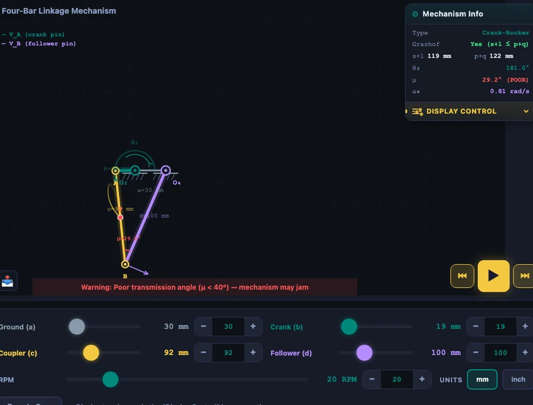

Four-Bar Linkage Synthesis — Freudenstein’s Equation, Precision Points, and Function Generation
- Four-bar linkage synthesis finds the link lengths that produce a desired input-output motion — the inverse of analysis, which starts from known lengths and finds the motion.
- Freudenstein's equation K₁·cos θ₄ − K₂·cos θ₂ + K₃ = cos(θ₂ − θ₄) is linear in K₁, K₂, K₃, so three precision-point (θ₂, θ₄) pairs give a solvable 3×3 system.
- Recover link lengths with b = a/K₁, d = a/K₂, c = √(a² + b² + d² − 2bd·K₃), fixing a = 1 then scaling; the default points 60°/90°, 90°/100°, 120°/105° yield a 30/19/92/100 mm Crank-Rocker.
Most courses in theory of machines spend weeks on four-bar linkage synthesis, then assign a design problem that students try to solve by sketching graphical constructions on graph paper — usually getting a different answer every time. Freudenstein’s equation changes that. It turns the same problem into a 3×3 linear system with a unique, reproducible answer. This guide walks through the complete synthesis procedure: what precision points are, how to set up and solve the Freudenstein equations, how to recover link lengths from the constants, and how to verify the result by loading it into the Four-Bar Linkage Simulator and watching it move.
Analysis vs Synthesis — Two Completely Different Problems
Here’s a scene that repeats itself every semester. The instructor asks: “The crank is 40 mm, the coupler is 90 mm, the follower is 70 mm, ground is 100 mm — classify this mechanism and find the transmission angle at \(\theta_2 = 45°\).” Half the class can do it. Then the follow-up question comes: “Now design a four-bar mechanism where the follower reaches 60° when the crank is at 45°, 80° when the crank is at 90°, and 100° when the crank is at 135°.” The room goes quiet.
That’s the difference. Analysis takes known link lengths and finds the motion. Synthesis takes a desired motion and finds the link lengths. Analysis is a forward problem — one set of inputs, one answer. Synthesis is an inverse problem, and it requires a different set of tools entirely. Graphical methods (drawing Freudenstein charts by hand) work in principle but introduce cumulative errors. The analytical approach through Freudenstein’s equation is exact, systematic, and fast enough to implement in a spreadsheet or a browser simulator.
Three Types of Kinematic Synthesis
Before writing a single equation, you need to know which type of synthesis problem you’re solving. There are three.
Function Generation
Function generation asks: can a four-bar mechanism reproduce a mathematical relationship between input angle \(\theta_2\) and output angle \(\theta_4\)? You specify pairs — “when the crank is at \(\theta_2 = 60°\), the follower should be at \(\theta_4 = 90°\)” — and the synthesis finds link lengths that satisfy those pairs. The mechanism doesn’t trace a path or move a rigid body. It generates a function. This is exactly what a windshield wiper speed control, a mechanical computing linkage, or a valve timing mechanism does — map one angle to another according to a specific rule.
Path Generation
Path generation asks: can a coupler point trace a specific curve? The point’s orientation is not controlled — only its \((x, y)\) position at each prescribed position matters. Coupler curves of four-bar linkages can produce approximate straight lines, circles, ovals, figure-eights, and a huge variety of higher-order curves. Straight-line approximations are particularly useful: Watt’s parallel motion linkage (1784) produces near-perfect straight-line motion at the coupler midpoint, which was essential for early steam engines before precision machining could produce accurate cylinder bores.
Motion Generation (Rigid-Body Guidance)
Motion generation asks: can the coupler carry a rigid body through a sequence of prescribed positions, where both location and orientation must match at each position? This is the most demanding of the three. A robotic gripper moving between grab-and-place positions, an aircraft panel hinge that rotates the door to a precise angle at a precise location — these are motion generation problems. Burmester theory, covered later in this article, is the formal framework for solving them.
Freudenstein’s Equation — The Analytical Core
Ferdinand Freudenstein published his landmark paper in 1955, reducing the four-bar linkage position problem to a single compact equation. Starting from the loop-closure constraint — the four links form a closed quadrilateral — he eliminated the coupler angle \(\theta_3\) to relate the crank angle directly to the follower angle:
\[K_1 \cos\theta_4 - K_2 \cos\theta_2 + K_3 = \cos(\theta_2 - \theta_4)\]
The three constants are functions of link lengths alone:
\[K_1 = \dfrac{a}{b}, \quad K_2 = \dfrac{a}{d}, \quad K_3 = \dfrac{a^2 + b^2 + d^2 - c^2}{2bd}\]
where \(a\) is the ground link, \(b\) is the crank (input), \(c\) is the coupler, and \(d\) is the follower (output). The elegant thing is that K₁, K₂, K₃ are linear in the equation — even though the linkage geometry is nonlinear. That linearity is what makes synthesis tractable: if you substitute three known (\(\theta_2\), \(\theta_4\)) pairs, you get three linear equations in three unknowns.
The equation also doubles as an analysis tool. Given link lengths, compute K₁, K₂, K₃ once, then evaluate the right-hand side for any \(\theta_2\) you want — much faster than solving the full position equations numerically. The simulator’s Equations panel does exactly this, showing the LHS and RHS values side by side with a residual that stays at zero to six decimal places.
The Three-Precision-Point Method — From Requirements to Link Lengths
Three precision points mean three (\(\theta_2\), \(\theta_4\)) pairs where the mechanism must satisfy the design requirement exactly. Substitute each pair into Freudenstein’s equation:
\[\begin{aligned} K_1 \cos\theta_{4,1} - K_2 \cos\theta_{2,1} + K_3 &= \cos(\theta_{2,1} - \theta_{4,1}) \\ K_1 \cos\theta_{4,2} - K_2 \cos\theta_{2,2} + K_3 &= \cos(\theta_{2,2} - \theta_{4,2}) \\ K_1 \cos\theta_{4,3} - K_2 \cos\theta_{2,3} + K_3 &= \cos(\theta_{2,3} - \theta_{4,3}) \end{aligned}\]
This is a 3×3 linear system in K₁, K₂, K₃. In matrix form:
\[\begin{bmatrix} \cos\theta_{4,1} & -\cos\theta_{2,1} & 1 \\ \cos\theta_{4,2} & -\cos\theta_{2,2} & 1 \\ \cos\theta_{4,3} & -\cos\theta_{2,3} & 1 \end{bmatrix} \begin{bmatrix} K_1 \\ K_2 \\ K_3 \end{bmatrix} = \begin{bmatrix} \cos(\theta_{2,1} - \theta_{4,1}) \\ \cos(\theta_{2,2} - \theta_{4,2}) \\ \cos(\theta_{2,3} - \theta_{4,3}) \end{bmatrix}\]
Solve by Cramer’s rule (determinants) or Gaussian elimination. Once K₁, K₂, K₃ are known, recover link lengths by fixing \(a = 1\) (unit ground link) and computing:
\[b = \dfrac{a}{K_1}, \quad d = \dfrac{a}{K_2}, \quad c = \sqrt{a^2 + b^2 + d^2 - 2bd \cdot K_3}\]
Finally, scale all four lengths so the longest link equals a convenient value (100 mm in the simulator) and you have a physically realisable mechanism. One caution: the system matrix is singular if all three precision points produce identical column ratios — in practice, this means choosing precision points that are well-separated in the operating range.
A practical guidance for precision point placement is Chebyshev spacing. For an operating range \([\theta_{2,\min}, \theta_{2,\max}]\), the three Chebyshev-spaced precision points minimize the maximum structural error across the entire range:
\[\theta_{2,k} = \dfrac{\theta_{2,\min} + \theta_{2,\max}}{2} - \dfrac{\theta_{2,\max} - \theta_{2,\min}}{2} \cos\!\left(\dfrac{2k-1}{2n}\pi\right), \quad k = 1, 2, 3\]
where \(n = 3\). Evenly spaced precision points are simpler to choose but can produce larger structural error between points. For most student exercises, even spacing is perfectly adequate.

Worked Example — Default Precision Points to Synthesized Crank-Rocker
The simulator’s Synthesis tab opens with three default precision points. Work through the complete calculation so you know exactly what the solver does.
Given precision points:
- Point 1: \(\theta_{2,1} = 60°\), \(\theta_{4,1} = 90°\)
- Point 2: \(\theta_{2,2} = 90°\), \(\theta_{4,2} = 100°\)
- Point 3: \(\theta_{2,3} = 120°\), \(\theta_{4,3} = 105°\)
Fill the coefficient matrix. Remember: angles go in as radians internally, but the cosines are just numbers:
\[\mathbf{M} = \begin{bmatrix} \cos 90° & -\cos 60° & 1 \\ \cos 100° & -\cos 90° & 1 \\ \cos 105° & -\cos 120° & 1 \end{bmatrix} = \begin{bmatrix} 0 & -0.5 & 1 \\ -0.174 & 0 & 1 \\ -0.259 & 0.5 & 1 \end{bmatrix}\]
The right-hand side vector:
\[\mathbf{r} = \begin{bmatrix} \cos(60° - 90°) \\ \cos(90° - 100°) \\ \cos(120° - 105°) \end{bmatrix} = \begin{bmatrix} 0.866 \\ 0.985 \\ 0.966 \end{bmatrix}\]
Solving the system (the simulator uses Cramer’s rule, computing three \(3\times 3\) determinants) gives:
\[K_1 \approx 1.559, \quad K_2 \approx 0.303, \quad K_3 \approx 0.714\]
Recover link lengths with \(a = 1\):
\[b = \dfrac{1}{1.559} = 0.641, \quad d = \dfrac{1}{0.303} = 3.300\]
\[c = \sqrt{1 + 0.641^2 + 3.300^2 - 2 \times 0.641 \times 3.300 \times 0.714} = \sqrt{9.25} = 3.042\]
Scale so the longest link (\(d = 3.300\)) becomes 100 mm. Scale factor = \(100/3.300 = 30.3\):
\[a = 30\,\text{mm}, \quad b = 19\,\text{mm}, \quad c = 92\,\text{mm}, \quad d = 100\,\text{mm}\]
Grashof check: \(s = 19\), \(l = 100\), \(p = 30\), \(q = 92\). Then \(s + l = 119 \leq p + q = 122\). Grashof condition satisfied. The shortest link is \(b\) (the crank), so the mechanism is a Crank-Rocker — continuous crank rotation, follower oscillates. You can verify this instantly by clicking “Load into Simulate” in the synthesis tab and pressing Play.
The structural error will be exactly zero at the three precision points and small (typically a few degrees at most) between them. If the error is unacceptably large, try repositioning the precision points using Chebyshev spacing, or use four precision points with a different method.
Burmester Theory — When You Need More Than Three Positions
Three precision points give one unique solution for function generation. What if you need to control the mechanism through four or five positions — or if you’re doing motion generation where the coupler must carry a rigid body through prescribed orientations as well as locations?
Burmester theory (1888) addresses exactly this. The key insight is about the locus of valid pivot points. For a coupler that must pass through a rigid-body sequence of positions:
- 3 prescribed positions: The fixed pivot can lie anywhere on a circle of poles — infinitely many valid mechanisms exist. You have design freedom to choose pivots for clearance, compactness, or force requirements.
- 4 prescribed positions: The valid fixed pivots collapse to a curve called the centerpoint curve. Still infinitely many solutions, but the design space is tighter. The corresponding moving pivot locus is the circlepoint curve.
- 5 prescribed positions: The centerpoint and circlepoint curves intersect at a finite number of discrete solutions called Burmester points. Typically two to four valid mechanisms exist. Each is an exact solution — the coupler passes through all five positions with zero error.
- 6 or more positions: The problem is generally overconstrained. Approximate synthesis (optimisation-based) is required.
The simulator’s Motion synthesis tab explains this hierarchy step by step, with a summary table of pivot constraints for each case. It’s the right place to start when a student asks “but what if I need the mechanism to pass through four positions?” — the answer is that the graphical Burmester construction becomes the method, not Freudenstein.
Using the Synthesis Simulator — a Step-by-Step Workflow
Step 1: Switch to Inversions mode. Click the “Inversions” pill tab at the top of the simulator controls. This reveals the three synthesis sub-tabs: Inversions, Equations, and Synthesis.
Step 2: Choose Function, Path, or Motion. Click “Synthesis” then select the sub-tab for your problem type. For Freudenstein function generation, stay on the “Function” sub-tab.
Step 3: Enter your precision points. The table shows three rows, each with a \(\theta_2\) input angle (degrees) and a \(\theta_4\) output angle (degrees). Enter the three (\(\theta_2\), \(\theta_4\)) pairs that define your function. Make sure they are well-separated and physically reasonable — precision points that are too close together produce an ill-conditioned matrix.
Step 4: Click “Solve & Synthesize.” The solver runs Cramer’s rule, computes K₁, K₂, K₃, recovers and scales the link lengths, and displays the result: all three Freudenstein constants to five decimal places, and all four link lengths to two decimal places.
Step 5: Load and verify. Click “Load into Simulate” and the synthesized mechanism loads directly into the Simulate mode. Watch it run. The Grashof condition and mechanism type appear in the readout cards. Check that the follower reaches the correct angles at the prescribed crank positions by pausing the animation at each precision point and reading the follower angle readout.
For path generation problems, switch to the “Path” sub-tab, which draws the coupler-midpoint curve for all four inversions of the current link chain side by side. You can visually identify which ground frame (inversion) produces a coupler curve closest to your target path, then click that inversion to animate it. The four-bar linkage analysis guide covers inversions in detail if this concept is new.
Try It Yourself
All tools below are free — no account, no download, works on any modern browser.
Key Takeaways
- Synthesis is the inverse of analysis: you specify a desired motion (\(\theta_2, \theta_4\) pairs) and derive the link lengths, not the other way around.
- Freudenstein’s equation \(K_1\cos\theta_4 - K_2\cos\theta_2 + K_3 = \cos(\theta_2 - \theta_4)\) is linear in K₁, K₂, K₃ — three precision points give a solvable 3×3 system.
- Link lengths follow from: \(b = a/K_1\), \(d = a/K_2\), \(c = \sqrt{a^2 + b^2 + d^2 - 2bd \cdot K_3}\), with \(a = 1\) then scaled to a practical size.
- The default precision points (60°/90°, 90°/100°, 120°/105°) produce K₁ ≈ 1.559, K₂ ≈ 0.303, K₃ ≈ 0.714 and synthesize a Crank-Rocker with links 30/19/92/100 mm.
- Chebyshev spacing of precision points minimises structural error between the prescribed positions across the full operating range.
- For rigid-body guidance through 5 prescribed positions, Burmester theory gives discrete exact solutions (Burmester points); 4 positions give the centerpoint curve; 3 positions give infinite solutions on a circle of poles.
- After synthesis, clicking “Load into Simulate” loads the result directly into the animation mode so you can verify the mechanism is mobile and assess the Grashof condition and transmission angle instantly.
Frequently Asked Questions
What is the difference between kinematic analysis and synthesis of a four-bar linkage?
Kinematic analysis starts with known link lengths and finds the resulting motion — angles, velocities, and accelerations — for any given crank position. Kinematic synthesis works in reverse: you specify the desired motion (input-output angle pairs, or a path a point must follow) and the synthesis procedure determines the link lengths that produce that motion. Analysis answers “how does this mechanism move?” Synthesis answers “what mechanism produces the motion I need?” Freudenstein’s equation makes function generation synthesis algebraic rather than graphical.
What are precision points in four-bar linkage synthesis?
Precision points are specific crank-follower angle pairs (\(\theta_2\), \(\theta_4\)) where the synthesized mechanism is required to satisfy the desired input-output relationship exactly. Between precision points, the mechanism may deviate slightly from the ideal function — this is called structural error. With three precision points, Freudenstein’s equation becomes a 3×3 linear system yielding a unique solution for K₁, K₂, K₃, from which all four link lengths are calculated. Chebyshev spacing of precision points minimises the maximum structural error across the operating range.
How does Freudenstein’s equation work for function generation?
Freudenstein’s equation K₁·cos \(\theta_4\) − K₂·cos \(\theta_2\) + K₃ = cos(\(\theta_2\) − \(\theta_4\)) relates the crank angle (\(\theta_2\)) to the follower angle (\(\theta_4\)) through three constants: K₁ = a/b (ground-to-crank ratio), K₂ = a/d (ground-to-follower ratio), and K₃ = (a² + b² + d² − c²)/(2bd). For three chosen precision points, substituting each (\(\theta_2\), \(\theta_4\)) pair gives three linear equations in K₁, K₂, K₃. Solving by Cramer’s rule gives the constants; then b = a/K₁, d = a/K₂, and c = √(a² + b² + d² − 2bd·K₃) with a set to 1 and all lengths scaled.
What is Burmester theory and how does it extend three-position synthesis?
Burmester theory addresses rigid-body guidance synthesis — finding a four-bar linkage that moves a coupler through a sequence of prescribed positions (each defined by both location and orientation). For three positions, infinitely many solutions exist — the valid pivot locations lie on circles called pole circles. For four positions, the locus of valid fixed pivots collapses to a curve known as the centerpoint curve, still offering infinitely many solutions. For five positions, only discrete solutions (Burmester points) exist. Six or more positions generally overconstrain the problem and require approximate synthesis methods.
What types of synthesis does the Four-Bar Linkage Simulator support?
The NHIT VisualLab Four-Bar Linkage tool supports three synthesis approaches under the Inversions tab. Function synthesis uses Freudenstein’s equation with three user-specified precision points (\(\theta_2\), \(\theta_4\)) to compute K₁, K₂, K₃ and synthesize link lengths — the result can be loaded directly into Simulate mode. Path synthesis shows the coupler-midpoint curves for all four inversions of the current chain side by side, revealing which ground frame gives the desired coupler path. Motion synthesis explains Burmester theory step by step, with a table of pivot constraints for three, four, and five prescribed positions.
Synthesis is what engineering actually is. Analysis tells you how something works; synthesis designs something that works. Freudenstein’s equation is the bridge between those two problems — it lets you move from “I need the follower at 90° when the crank is at 60°” to a set of four specific link lengths in a few minutes of algebra. Once you’ve done the calculation and watched the mechanism animate at the right angles, the abstract idea of kinematic synthesis stops being a procedure to memorise and starts being a design tool you’ll actually reach for.
Try it now — open the Four-Bar Linkage Simulator, head to Inversions → Synthesis, change the default precision points to match your own design requirement, and let the solver find the mechanism.